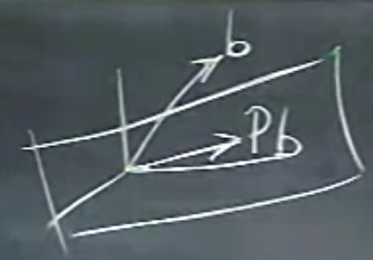
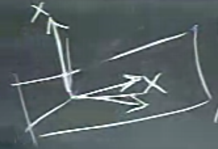

Bu özdeğer/vektörler hakkındaki ilk dersimiz. Bu değerler özel büyüklüklerdir, özel sayılardır, ve onları niye istediğimizi, niye hesapladığımızı göreceğiz.
Özvektör nedir?
Elimde bir \(A\) matrisi var. Bir matris ne yapar? Vektörler üzerinde, mesela \(x\) vektörü, etkide bulunabilir, onları değiştirebilir. Sanki \(A\)’yi bir fonksiyon gibi de görebiliriz, \(x\) vektörü \(A\)’ya “giriyor’’ ve”dışarıya’’ bir \(Ax\) çıkıyor. Calculus’ta olduğu gibi \(f()\)’e bir tek sayı \(x\) veriliyor, \(f(x)\) geri dışarı çıkıyor [hakikaten de \(x\) ve \(Ax\) aynı boyutta yani giriş çıkış analojisi çok uygun]. Lineer Cebirde daha çok boyut var, giren ve çıkan vektörler.
Bu derste özellikle ilgilendiğim vektörler ise dışarı çıktığı zaman girdiği haliyle aynı yönü gösteren vektörler. Dikkat, “aynı’’ olan vektörler değil çıkınca aynı”yönü’’ gösteren vektörler. Bu tipik bir durum olmazdı değil mi? Çoğunlukla \(A\)’yi bir uyguladık mı dışarı çıkan vektör tamamen başka bir yönü gösterir. Bizim ilgilendiğimiz durumda öyle olmayacak, bu durumda \(Ax\), \(x\)’e paralel olacak. İşte bu vektörler özvektörler olacak.
Paralel ne demektir? Formülle daha rahat belirtilir,
\[ Ax = \lambda x \]
\(\lambda\), yani özdeğer, bir skalardır. İki tarafta \(x\)’in olması paralelliğe işaret ediyor, sadece büyüklük (\(\lambda\) üzerinden) değişik olabiliyor. Tabii büyüklük derken \(\lambda\) eksi değerde olabileceği için vektörün ters yönde olmasına da izin vermiş oluyoruz. \(\lambda\) sıfır da olabilir, hatta hayali sayı bile olabilir.
Özdeğer sıfır üzerinde biraz daha duralım. Bu durumda \(Ax = 0 \cdot x\) elde ederiz yani \(Ax = 0\). Bu ne demektir? \(x\)’lerin \(A\)’nin sıfır uzayında (nullspace) olması… Eğer \(A\) eşsiz (singular) ise, ki \(Ax = 0\) bu demek zaten demek ki öyle bir \(x\) olabiliyor ki \(Ax = 0\) olabiliyor, o zaman \(x\) sıfır olmayan bir vektördür, ve \(\lambda = 0\) bir özdeğer olmalıdır.
Bir yansıtma matrisine bakalım, mesela \(P\). Elimizde bir düzlem (plane) var, ve bu sathın üzerinde yansıtma yapan bir \(P\) var.

\(b\), \(P\)’nin bir özvektörü müdür? Değildir. Çünkü \(b\) ve \(Pb\) aynı yönü göstermiyorlar.
Peki, bu resme göre, yansıtma sonrası aynı yönde olacak bir vektör var mıdır? Varsa nerededir? Cevap, eğer \(x\) üstteki düzlemin tam üzerinde ise \(P\) yansıtması sonrası aynı yönde kalır. Tabii yansıtma tekrar kendisini verir, yani vektör hiç değişmemiş olur. \(Px = x\), ki \(\lambda = 1\).
Başka bir özvektör var mı? Olmasını umuyorum çünkü 3 boyuttayım ve bu demektir ki 2 tane daha birbirinden bağımsız özvektör bulabilmeliyim, ki nihayetinde özvektörlerin ikisi düzlem üzerinde [düzlem iki boyutlu bir şey olduğuna göre], o zaman üçüncüsü düzlem dışında olacak. Düzlem dışında olan özvektör dik olan özvektör olmalı.

Bu durumda \(Px = 0\), ve \(\lambda = 0\), çünkü dikliğin bir diğer tanımı çarpım sonrası sonucun sıfır olması.
Bir diğer örnek. Şu permutasyon matrisine bakalım.
\[ A = \left[\begin{array}{cc} 0 & 1 \\ 1 & 0 \end{array}\right] \]
Bu matrisi hangi vektör ile çarparsam aynı yönde bir vektör elde ederim? Permutasyon matrisi tanım itibariyle permutasyon yapar, yani öğelerin yerini değiştirir. İki boyut bağlamında bir vektörün iki öğesinin yerini değiştirecektir. Peki hangi vektörün öğeleri yer değiştirirse yine kendisi olur? Cevap basit, \(x = \left[\begin{array}{cc} 1 & 1 \end{array}\right]\).
\[ x = \left[\begin{array}{c} 1 \\ 1 \end{array}\right], \quad Ax = \left[\begin{array}{c} 1 \\ 1 \end{array}\right], \quad \lambda = 1, \quad Ax = x \]
Bir tane daha özdeğer/vektör lazım. Bu diğer özdeğer \(\lambda = -1\) olmalı. Peki nasıl bir vektör olmalı ki öğeleri yer değiştirince ters yönü göstersin?
\[ x = \left[\begin{array}{r} -1 \\ 1 \end{array}\right], \quad Ax = \left[\begin{array}{r} 1 \\ -1 \end{array}\right], \quad \lambda = -1, \quad Ax = -x \]
Özvektör/değerler hakkında ufak bir şey daha söylemek istiyorum. \(N \times N\) matrisinin \(N\) tane özdeğeri vardır. Bu değerleri bulmak kolay değildir. 1., 2., hatta \(N\)’inci seviye bir denklemden çıkar bu değerler. Fakat bize yardım eden bir numara vardır, tüm özdeğerlerin toplamı matrisin köşegen değerlerinin toplamına eşittir, ki bu toplama “iz’’ (trace) ismi verilir.
Bu numarayı üstteki örnekte kullanırsak, \(\lambda = 1\) bulduğum anda diğer özdeğerin -1 olduğunu hemen bilirim, çünkü ana matrisin izi sıfır, \(0 - 1 = -1\).
Artık özdeğer/vektör hesabına gelelim. \(Ax = \lambda x\) denklemi var, bu denklemde iki bilinmeyen var. Bu denklemi nasıl çözerim? Bir numara, her şeyi tek tarafa gönderirim,
\[ (A-\lambda I )x = 0 \]
Şimdi bu denklem bana bir şeyler söylüyor. Eğer bir \(x\) “var’’ ise, bu varlık, \(A-\lambda I\)’nin eşsiz olduğu anlamına gelir. Peki eşsiz matrisler hakkında ne biliyorum? Determinantlarının sıfır olduğunu biliyorum. Yani,
\[ \det (A -\lambda I) = 0 \]
Bu denklem özdeğer denklemi, ya da karakteristik denklem (characteristic equation) olarak bilinir.
İlk önce \(\lambda\) bulmakla işe başlarım. Tabii \(N\) tane \(\lambda\) olacaktır, bunların hepsini bulmakla işe başlarım. Not: \(N\) \(\lambda\) olması demek \(N\) değişik \(\lambda\) olması anlamına gelmiyor, bazı \(\lambda\) değerleri kendini tekrar edebilir. Tabii tekrarlanan \(\lambda\) bizim dersteki her türlü derdin kaynağıdır [biraz şaka biraz gerçek havasıyla söylüyor hoca].
\(\lambda\)’yi bulunca ne yaparım? Matrisin sıfır uzayını hesaplarım, ki artık bu işlemde usta olduk, eliminasyona başlarım, pivot bulurum, vs.
Örnek
\[ A = \left[\begin{array}{ccc} 3 & 1 \\ 1 & 3 \end{array}\right] \]
Bu matris simetrik. Bu tür özel şartlar matrisin özdeğerlerinin de özel olması anlamına gelir. Mesela simetrik matrislerin tüm özdeğerlerinin reel sayı olduğunu hemen bilirim. Peki özvektörler? Birbirlerine dik olurlar. Bir önceki örneği hatırlarsak, \(\left[\begin{array}{cc}1&-1\end{array}\right]\) ve \(\left[\begin{array}{cc}-1&1\end{array}\right]\).
\[ \det (A -\lambda I) = \left[\begin{array}{ccc} 3-\lambda & 1 \\ 1 & 3-\lambda \end{array}\right] = (3-\lambda)^2 -1 = 0 \]
\[ \lambda^2 - 6\lambda + 8 = 0 \]
Bu formüldeki \(6\) nedir? Matris izinin eksi hali. Peki 8? O da determinant. Yani 2x2 durumunda sayılar çok basit şekilde ortaya çıkıyorlar. Neyse, üstteki formülü faktorize edelim, \((\lambda - 4)(\lambda - 2)\), yani \(\lambda_1 = 4,\lambda_2 = 2\).
Şimdi özvektörler: Bu vektörler köşegenden 2 ya da 4 çıkartıldığı zaman ortaya çıkan matrislerin sıfır uzayıdır.
\[ \left[\begin{array}{ccc} 3-4 & 1 \\ 1 & 3-4 \end{array}\right] = \left[\begin{array}{ccc} -1 & 1 \\ 1 & -1 \end{array}\right] \]
Bu matris eşsiz mi? Öyle. Bu matrisi \(x_1=\left[\begin{array}{cc} 1 & 1 \end{array}\right]\) ile çarparsam sıfır elde ederim. Diğeri?
\[ \left[\begin{array}{ccc} 3-2 & 1 \\ 1 & 3-2 \end{array}\right] = \left[\begin{array}{ccc} 1 & 1 \\ 1 & 1 \end{array}\right] \]
\(x_2 = [1 \ -1]\). Bu da ikinci özvektör.
İlginç bir durum, bu sonuç permutasyon matrisinden gelen sonuca çok benziyor. Fark nerede? Ana matrisin köşegenine 3 eklenmiş, ya da \(A + 3I\) yapılmış. Bunu yapınca özdeğerlere 3 eklemiş oldum. Ama özvektörler hiç değişmeden kaldı.
Daha çetrefil bir örnek görelim. Diyelim ki iki matris \(A,B\)’nin özdeğerlerini biliyorum. \(A+B\)’nin özdeğerleri \(\lambda,\alpha\) nedir? İlk akla gelen cevap “özdeğerleri toplanır’’ doğru değil. Çünkü
\[ (A+B)x = (\lambda+\alpha)x \]
demiş oluruz, ama bunu derken özvektörler aynı demiş oluruz. Bu doğru değildir. \(A \cdot B\) aynı şekilde. Bunlar kötü örnekler.
Bir örnek daha yapalım, bu sefer döndürme / rotasyon (rotation) matrisi. 90 derece döndürme matrisi olsun.
Örnek
\[ Q = \left[\begin{array}{ccc} \cos 90 & -\sin 90 \\ \sin 90 & \cos 90 \end{array}\right] = \left[\begin{array}{ccc} 0 & -1\\ 1 & 0 \end{array}\right] \]
Bu bir dik, dikgen (orthogonal) bir matris. Özdeğerlerin toplamı sıfır olacak, çünkü iz öyle. Determinant özdeğerlerin çarpımına eşit, yani bu çarpım 1 olacak.
Fakat bu örnekte bazı şeyler yanlış gidecek. Niye? Düşünelim, hangi vektör bu matrise verilince, döndürüldükten sonra dışarı aynı yönde olarak çıkar? Özellikle 90 derece döndürüldükten sonra. Gördüğünüz gibi problem çıkabilir. Özdeğerler ile de problem var, toplamı 0 olan ama çarpımı 1 olan nasıl sayılar bulabileceğiz ki?
Fakat bir çare var. Hesaplayalım,
\[ \det(Q - \lambda I) = \left[\begin{array}{ccc} -\lambda & -1 \\ 1 & -\lambda \end{array}\right] = \lambda^2 + 1 = 0 \]
Özdeğerler nedir? \(\lambda_1 = i, \lambda_2 = -i\). Bu sayılar kompleks / hayali sayılardır, reel değillerdir. Bu olabilir. Bir matris, üstte olduğu gibi, tamamen reel sayılardan oluşabilir, ama özdeğerleri hayali olabilir.
Bu iki hayali sayı birbirinin kopmleks eşleniği (complex conjugate). Kompleks eşleniğin ne olduğunu hatırlıyoruz herhalde, bir sayının hayali kısmının işaretini değiştirince onun kompleks eşleniğini elde etmiş olurum. Üstteki sayılar zaten tamamen hayali bölümden oluşuyor, hiç reel kısımları yok, o tek kısmın da işaretini değiştirince eşleniği elde ediyorum.
Eğer matrisim simetrik, ya da “simetriğe yakın’’ olsaydı, üstteki durum kesinlikle ortaya çıkmazdı. Çünkü kural odur ki, simetrik matrislerin özdeğerleri reeldir.
Bol bol örnek veriyorum ki tüm olasılıkları görebilelim.
Bir kötü ihtimal daha.
\[ A = \left[\begin{array}{ccc} 3 & 1 \\ 0 & 3 \end{array}\right] \]
Bu matris üçgensel (triangular). Bu tür matrislerde özdeğerler köşegenin üzerindedir! Bunu bilmek oldukça faydalıdır. Ama kontrol edelim,
\[ \det(Q - \lambda I) = \left[\begin{array}{ccc} 3-\lambda & 1 \\ 0 & 3-\lambda \end{array}\right] = (3-\lambda)(3-\lambda) = 0, \lambda_1 = 3, \lambda_2 = 3 \]
Problem nerede? Problem özvektörlerde. Hatırlayalım,
\[ (A-\lambda I)x = 0\]
denklemini çözüyoruz, yani
\[ (A-\lambda I)x = \left[\begin{array}{cc} 0 & 1 \\ 0 & 0 \end{array}\right] \vec{x} = \left[\begin{array}{c} 0 \\ 0 \end{array}\right] \]
Burada \(\vec{x}\) sonucunu arıyorum, bir vektör. Kafadan hemen birinci özvektörü bulabilirim,
\[ x_1 = \left[\begin{array}{c} 1 \\ 0 \end{array}\right] \]
Peki ikinci özvektör nedir? Bu vektörün birinciden bağımsız olması gerekir, unutmayalım. Böyle bir vektör bulabilir miyiz? Bulamayız. Mümkün değil. Bu sebeple bu örneğe dejenere durum (değenerate case) denir. İkinci bir bağımsız özvektör yoktur.
Ekler
Alttaki anlatım alternatif bir kaynaktan alınmıştır
Özvektörler, Özdeğerleri Elle Hesaplamak (Eigenvectors, Eigenvalues)
Özdeğerler ve özvektörler her matrise göre özel vektörlerdir, ki matris bu özel vektörleri transform ettiğinde / işlediğinde sonuç yine özvektörün kendisidir, daha doğrusu onun bir sabit (özdeğer) ile çarpılmış halidir. Yani
\[ Ax = \lambda x \]
Tek tarafa geçirelim
\[ Ax - \lambda x = 0 \]
Bu noktada \(x\)’leri dışarı çekmek isterdik, fakat bunu yapamayız, çünkü o zaman içeride \(A - \lambda\) kalır ve bu olmaz, çünkü \(A\) bir matris, \(\lambda\) bir tek sayı. Ama \(Ix = x\)’ten hareketle
\[ Ax - \lambda I x = 0 \]
diyebiliriz. Şimdi dışarı çekersek
\[ (A - \lambda I) x = 0 \]
Bu ifadenin doğru olması için parantez içindeki ifade / matris eşsiz (singular) olmalıdır. Bunun için ise parantez içinin determinantı sıfır olmalıdır. Yani
\[ |A - \lambda I| = 0 \]
Örnek
\[ A = \left[\begin{array}{rr} 1 & 4 \\ 3 & 5 \end{array}\right] \]
\[ A - \lambda I = \left[\begin{array}{rr} 1 & 4 \\ 3 & 5 \end{array}\right] - \lambda \left[\begin{array}{rr} 1 & 0 \\ 0 & 1 \end{array}\right] \]
\[ = \left[\begin{array}{rr} 1 - \lambda & 4 \\ 3 & 5-\lambda \end{array}\right] \]
\[ det(A - \lambda I) = (1-\lambda)(5-\lambda) - 4 \cdot 3 \]
Üstteki denkleme karakteristik denklem (characteristic equation) denir.
\[ = -7 -6\lambda + \lambda^2 \]
Kökleri \(\lambda_1 = 7\), \(\lambda_2 = -1\).
Her özdeğere tekabül eden özvektörü bulmak istiyorsak, çıkartma işlemini yapalım
\[ A - \lambda I = \left[\begin{array}{rr} 1-7 & 4 \\ 3 & 5-7 \end{array}\right] = \left[\begin{array}{rr} -6 & 4 \\ 3 & -2 \end{array}\right] \]
Şu formüle dönersek
\[ (A - \lambda I) x = 0 \]
Çıkartma sonrası elimize geçen matrisi çarpacak öyle bir \(x\) vektörü arıyoruz ki bu vektörle çarpınca elimize sıfır (vektörü) geçsin. Yani bu aradığımız \(x\) vektörü \((A - \lambda I)\)’nin sıfır uzayında (nullspace).
2 x 2 boyutundaki böyle ufak bir örnek için \(x\)’i aslında tahmin edebiliriz. Öyle iki sayı bulalım ki, 1. ve 2. kolonu onlarla ayrı ayrı çarpıp topladığımızda sonuç sıfır olsun. Her iki kolonun tepesinde -6 ve 4 görüyorum, sadece bu iki sayının sıfıra toplanması için acaba -6’yı 2 ile 4’ü 3 ile çarpıp toplasam olur mu? Kolondaki diğer sayılara bakıyoruz, 3 ve -2 için de bu işe yarıyor. Demek ki özvektörlerden biri
\[ x_1 = \left[\begin{array}{r} 2 \\ 3 \end{array}\right] \]
Diğeri ise, aynı tekniği kullanarak,
\[ x_2 = \left[\begin{array}{r} -2 \\ 1 \end{array}\right] \]
Ekler
Özdeğer/Vektör Hesabında Üst Metot (Power Method)
Diyelim ki bir \(A\) matrisinin, ki \(A \in \mathbb{R}^{n \times n}\), özdeğerleri \(\lambda_1,...,\lambda_n\) ve özvektörleri \(v_1,..,v_n\) olarak verilmiş. Bu demektir ki her \(i=1,..,n\) için \(Av_i = \lambda_i v_i\). Farzedelim ki bu matrisin tüm özvektörleri bir “özbaz (eigenbasis)’’ oluşturuyor ve bu baz ile \(\mathbb{R}^n\)’deki herhangi bir vektörü temsil edebiliyoruz. Hatırlayalım eğer tekrar eden özdeğer yok ise (hepsi değişik), normalize edilmiş \(v_i\) vektörleri birimdik (orthonormal) bir set oluştururlar, \(||v||=1,v_i^Tv_i=1,v_j^Tv_i=0\) demektir.
Diyelim ki \(|\lambda_1| > |\lambda_2| > .. > |\lambda_n|\), bu yazıda \(\lambda_1\)’e baskın (dominant) özdeğer diyeceğiz. Şimdi Herhangi bir \(v_0 \in \mathbb{R}^n\)’i alalım. Üsttekiler ışığında \(\mu_1,..,\mu_n\) olarak öyle katsayılar olmalıdır ki
\[ v_o = \mu_1v_1 + .. + \mu_nv_n \]
çünkü özvektörler bir baz oluşturuyorlar. Şimdi her iki tarafı soldan \(A\) ile çarpalım, ayrıca \(Av_i = \lambda_iv_i\) eşitliğinden hareketle üstteki eşitliğin sağ tarafını alıp üçüncü bir eşitlik olarak en sağda yazalım,
\[ A v_o = \mu_1 A v_1 + .. + \mu_n A v_n = \mu_1\lambda_1v_1 + ... + \mu_n\lambda_nv_n \]
Şimdi üstteki ifadeyi \(A\) ile bir daha, hatta birkaç defa çarpalım, diyelim toplam \(m\) kere çarpmış olalım,
\[ A^m v_o = \mu_1 A^m v_1 + .. + \mu_n A^m v_n = \mu_1\lambda_1^mv_1 + ... + \mu_n\lambda_n^mv_n \qquad (1) \]
En sağda niye \(\lambda_i^m\) ifadeleri elde ettik? Mesela \(\mu_1\lambda_1v_1\) ifadesi, \(A\) ile bir kere çarpılınca,
\[ \mu_1\lambda_1\underbrace{Av_1}_{\lambda_1v_1} = \mu_1\lambda_1\lambda_1v_1 = \mu_1\lambda_1^2v_1 \]
olacaktır. Bunu \(m\) kere yapınca (1)’in en sağındaki sonucu elde ederiz.
Şimdi (1)’in en sağındaki eşitliğin içinden \(\lambda_1^m\)’i çıkartalım (1)’ın en solundaki eşitlik ile yanyana getirelim,
\[ A^m v_o = \lambda_1^m \bigg( \mu_1v_1 + \mu_n \bigg(\frac{\lambda_2}{\lambda_1}\bigg)^m v_2 + ... + \mu_n \bigg(\frac{\lambda_n}{\lambda_1}\bigg)^m v_n \bigg) \]
İspatın başında baskın özdeğerin \(\lambda_1\) olduğunu söylemiştik. O zaman
\[ \bigg| \frac{\lambda_2}{\lambda_1} \bigg| < 1, ..., \bigg| \frac{\lambda_n}{\lambda_1} \bigg| < 1 \]
Bu demektir ki limit koşulu \(m \to \infty\) durumunda
\[ A^m v_o = \lambda_1^m \bigg( \mu_1v_1 \cancelto{0} { + \mu_n \bigg(\frac{\lambda_2}{\lambda_1}\bigg)^m v_2 + ... + \mu_n \bigg(\frac{\lambda_n}{\lambda_1}\bigg)^m v_n } \bigg) \]
Yani,
\[ A^m v_o = \lambda_1^m \mu_1v_1 \]
çünkü 1’den küçük olan tüm bölümler, katları alındıkça ve o kat (\(m\)) çok büyüdüğünde sıfıra giderler. Bu bölümleri içeren tüm terimler yokolur ve geriye üstteki ifade kalır.
Böylece üst metodunu türetmiş olduk. En son ifade şunu söylüyor, herhangi bir vektör \(v_0\)’i alalım, ve onu \(A\) ile \(m\) kere çarpalım, ve bu durumda elimize gerçek özvektör \(v_1\)’e paralel bir vektör \(\lambda_1^m \mu_1v_1\) geçecektir (paralel çünkü \(v_1\) değeri tek sayı / skalar \(\lambda^m\mu_1\) ile çarpılmakta). Bu vektörü normalize ederek bir özvektör sonucu elde edebiliriz. Unutmayalım, özvektörlerin sadece yönü ile ilgileniyoruz, büyüklükleri ile ilgilenmiyoruz, eğer \(v_1\) bir özvektör ise, herhangi bir skalar \(k\) için \(kv_1\) de bir özvektördür. Ders başında özvektörlerin “A ile çarpılıp yönünün değişmemesi’’ bağlamında tanımlandığını aklımızda tutalım [2].
Örnek olarak alttaki \(A\)’yi alalım, başlangıç olarak \(v_0=\left[\begin{array}{cc} 1 & 1 \end{array}\right]\)
v0 = np.array([1.,1.])
A = np.array([[13., 5.], [2., 4.]])
for i in range(20):
v0 = np.dot(A,v0)
print 'v0 =',v0v0 = [ 1.14093076e+23 2.28186151e+22]Sonsuzluk norm’u (infinity norm) ile normalize edersek (sonsuzluk normu bir vektör içindeki en büyük öğenin alınıp bölümde kullanılmasıyla yapılan normalizasyondur),
v1 = v0 / np.max(v0)
v1 = v1.reshape((2,1))
print 'v1 ='
print v1v1 =
[[ 1. ]
[ 0.2]]Kontrol edelim,
import numpy.linalg as lin
U,D = lin.eig(A)
print U
print D[ 14. 3.]
[[ 0.98058068 -0.4472136 ]
[ 0.19611614 0.89442719]]Birinci kolona oldukça yakın bir değer elde ettik, ki en büyük özdeğere tekabül eden özvektör orada.
Peki özdeğerin kendisini nasıl buluruz? Rayleigh Bölümü (Rayleigh Quotient) formülünü kullanabiliriz. Bu formül, eğer \(x\) bir özvektör ise
\[ \lambda = \frac{x^TAx}{x^Tx} \]
Türetelim,
\[ Ax = \lambda x \]
\[ x^TAx = x^T\lambda x \]
\(\lambda\) bir tek sayı olduğuna göre sağ taraftan \(x^Tx\)’i alıp, solda bölüm yapabiliriz, ve Rayleigh formülüne erişiriz.
\[ x^TAx / x^Tx = \lambda \]
print np.dot(np.dot(v1.T,A),v1) / np.dot(v1.T,v1)[[ 14.]]Tüm Özvektörler
En büyük özdeğeri bulmanın yolunu gördük. Diğer özvektörleri nasıl buluruz? Bunun yöntemlerinden birisi en büyük özdeğer \(\lambda_1\)’i bulduktan sonra onu bir işlem sonrası en küçük haline getirmek, ve Üst Metotu tekrar kullanarak (artık en büyük olan) \(\lambda_2\)’yi bulmak. \(\lambda_1\)’i en küçük haline getirmek, özdeğer/vektörü ana matris \(A\)’dan çıkartmak, onu “deflasyon işlemine tabi tutmak’’ (deflation) olarak biliniyor. Çıkartacağımız değer \(\lambda_1u_1u_1^T\) olacak. İspatı şöyle gösterelim (normalize edilmiş \(v_i\) özvektörleri şimdi \(u_i\) olarak gösteriyoruz),
\[ (A-\lambda_1u_1u_1^T)u_j = Au_j-\lambda_1u_1u_1^Tu_1u_j = \lambda_ju_j - \lambda_1u_1(u_1^Tu_j) \]
Eğer \(j=1\) ise
\[ (A-\lambda_1u_1u_1^T)u_1 = \lambda_1u_1 - \lambda_1u_1(u_1^Tu_1) = 0u_j\]
Eğer \(j \ne 1\) ise
\[ (A-\lambda_1u_1u_1^T)u_j = \lambda_ju_j - \lambda_1u_1(u_1^Tu_j) = \lambda_ju_j \]
Yani \((A-\lambda_1u_1u_1^T)\)’nin özvektörleri \(A\) ile aynıdır, tek farkı en büyük olanı 0 haline gelmiştir, ama \(j \ne 1\) için, yani diğer tüm özvektörleri aynıdır. O zaman deflasyon işleminden sonra ele geçen yeni matris üzerinde Üst Metotu tekrar kullanırsak artık en büyük olan \(u_2\)’yi buluruz, sonra deflasyonu tekrarlarız, bir daha Üst Metot işletiriz, bu böyle devam eder.
lam1 = 14.
v0 = np.array([1.,1.])
B = A - np.dot(v1,v1.T)*lam1
print 'B'
print B
for i in range(20):
v0 = np.dot(B,v0)
v2 = v0 / np.max(v0)
v2 = v2.reshape((2,1))
print 'v2'
print v2B
[[-1. 2.2 ]
[-0.8 3.44]]
v2
[[ 0.55]
[ 1. ]]Rayleigh Bölümü ile ikinci özdeğeri bulalım,
print np.dot(np.dot(v2.T,B),v2) / np.dot(v2.T,v2)[[ 3.]]Kaynaklar
[1] Feys, MATH317 EIGHTEENTH TUTORIAL, http://www.math.mcgill.ca/feys/documents/tutnotesR18.pdf
[2] Woolgar, Lab 15-Power Method and Dominant Eigenvalues, http://www.math.ualberta.ca/~ewoolgar/labs/linalg/Lab15.pdf
[3] Roberts, Computation of matrix eigenvalues and eigenvectors , http://www.robots.ox.ac.uk/~sjrob/Teaching/EngComp/ecl4.pdf
[4] Murphy, K., CS340: Machine Learning Lecture Notes, www.ugrad.cs.ubc.ca/~cs340
[6] Zaki, Maira, Fundamentals of Data Mining Algorithms